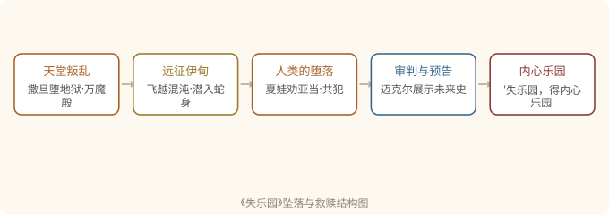

失乐园
一、基本信息
| 作者 | 弥尔顿 |
|---|---|
| 成书/出版 | 1667年出版（10卷；1674年12卷再版） John Milton — Encyclopaedia Britannica（百科全书） |
| 国别/地区 | 英国 |
| 时代 | 近代 · 17世纪 |
| 体裁 | 史诗（长篇无韵诗，12卷） |
| 语言 | 英语 |

二、创作背景
写作背景：王政复辟（1660）后的政治失势者、双目失明的清教革命斗士，以口述方式写作一部'向人类讲述天意'的圣经史诗（Britannica：Paradise Lost (1667), the greatest epic poem in English——其定位）。1667年初版10卷，1674年改为12卷并加'论证'散文序（版本史通说待核）。
神学语境：清教革命的失败使弥尔顿把政治问题转写为神学问题——堕落、自由意志、预知与恶的起源（通说解读）。
文学语境：以圣经素材接续荷马—维吉尔的古典史诗传统——同时 'Dryden adapted Paradise Lost as an opera; Pope parodied it in The Rape of the Lock; Shelley modeled Prometheus on Milton's Satan in Prometheus Unbound (1820)'（Britannica：影响链）。
三、内容脉络
卷一至四：撒旦与叛天使被逐出天堂、堕入地狱——万魔殿议事，撒旦决意'以恶致善'、远征新造的世界；飞越混沌抵达伊甸园，潜入蛇身。撒旦的雄辩（'宁在地狱称王，不在天堂为奴'——原文意，公有领域）使其成为文学史上最迷人的反派。
卷五至八：天使拉斐尔向亚当夏娃讲述天庭战争与创世——嵌套叙事中的神学授课。
卷九：堕落——蛇诱夏娃，夏娃劝亚当共犯；'人类的堕落'以近乎婚姻悲剧的心理写实呈现（通说解读）。
卷十至十二：审判、互责与神的救赎预告；大天使迈克尔向亚当展示人类未来的历史全景（该隐至洪水至弥赛亚）——'乐园失而复得'：'你将拥有一个内心的乐园，快乐百倍'（原文意，待核）。
四、主要人物表
| 人物 | 身份 | 说明 |
|---|---|---|
| 撒旦（路西法） | 堕落天使 | 革命者/僭主的双重形象：雄辩、骄傲、自我毁灭——浪漫主义'撒旦党'的起点 |
| 亚当 | 人类始祖 | 理性而屈服于情爱——与夏娃共担堕落 |
| 夏娃 | 人类始祖 | 虚荣与智慧并存——18世纪以来女性主义解读的核心对象 |
| 上帝（圣父） | 全能者 | 预知而不干预——自由意志的辩护者（此神学立场学界有争论） |
| 圣子 | 救赎者 | 自愿献身——'牺牲'主题的神学支点 |
| 拉斐尔、迈克尔 | 大天使 | 嵌套叙事的讲述者 |
五、主题与艺术特点
- 自由意志与堕落：'不是命运迫使人堕落，而是人自己的选择'（Britannica 对全诗核心的转述——其原文表述待核）——神义论的史诗化。
- 撒旦的悲剧英雄性：革命者的修辞术+僭主的野心——政治隐喻（复辟后的弥尔顿写自己的失败党派，通说解读）。
- 婚姻与平等：卷四亚当夏娃之辩（' unequal but harmonious'的张力）——性别议题的17世纪表述（学界争论热点）。
- 艺术特点：仿拉丁语序的英语素体诗、开卷'唱吧，天上的缪斯'的呼唤（原文意）、黑暗与光的意象系统。
六、影响与评论
- Britannica（Milton 条目）：'the greatest epic poem in English'（英语最伟大的史诗）；Dryden 改编歌剧、蒲柏戏仿、雪莱以弥尔顿式撒旦塑普罗米修斯（Britannica 影响链）。
John Milton — Encyclopaedia Britannica（百科全书） - Britannica：'his political writings opposed tyranny and state religion, influencing later revolutions including the American and French'（《论出版自由》等政治写作影响美法革命）。
John Milton — Encyclopaedia Britannica（百科全书） - 浪漫主义传统：Blake 与 Shelley 组成的'弥尔顿的撒旦党'（Milton's Satan party）——撒旦作为反抗者的英雄化（通说待核）。
John Milton — Encyclopaedia Britannica（百科全书） - 中译：朱维之等译《失乐园》（人民文学出版社/上海译文多版本，通说待核）。
John Milton — Encyclopaedia Britannica（百科全书）
七、阅读建议
- 17世纪英语与拉丁化句法（倒装、省略）现代读者吃力——选带导论的译本或双语本。
- 圣经典故（创世记、启示录）与神学概念（三位一体、阿民念主义）需要注释。
- 长卷中有'天文—地理—神学'的说明性段落（如卷八宇宙论），可按兴趣跳读。
- 朱维之译《失乐园》（人民文学出版社）：通行译本。
- 金发燊译本（广西师范大学出版社，通说待核）：学术注释版。
- 英文本：Oxford World's Classics 或 Norton Critical Edition（含评论文选）。
先读卷一（地狱万魔殿）与卷四（伊甸园与撒旦初窥）→ 卷九（堕落）→ 卷十二（未来展示与结尾）→ 通读其余卷（可跳卷七八的天文学）。对照《约伯记》与《创世记》原文。
八、待核实
- 1667年10卷/1674年12卷版本细节待核。
- 口述写作的记录者（女儿们/抄手）的传记细节待核。
- '撒旦党'（Blake/ Shelley 论断）的原始文献待核。
- 朱维之译本出版信息待核。